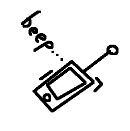
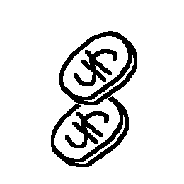

All what you would need to know
|
Radio Ganer
 |
Radio-Ganer is a device that gives access to "call" someone. With relay network and radio waves, it is possible to "connect" to someone. It supports audio and visual feed and It was developed by Yetsen Yanuaferu, founder of "RG Foundation". |
|
 |
This is convented currency in Mind. Used for any monetary transaction as a reliable replacement for barter. In beforedocking ages was areas and production. {Mem} in 24.06.4M was invited a first currency, paper. Lately all are invented own currecies, even from minuding ore. But eventually made an abstract currency called 'S'. First usage was in {Vec}, lately in {G}, and lately the rest of the world. It has not physical value, yet they are secured in ESC area. Overtime, it becomes more and more deprecated, because a startup "TetraBank" was rised up and became a better way to exchange money, due to it is network accesibility. |
|
Freighter
|
Freighter is a flying transport that carries goods and passangers. Boarding usually takes 20 minutes. They usually reach up to 60 meters in length with max speed of 230 meters per seconds. First freighters were produced by ESC, having their peak lenght of 20 meters. |